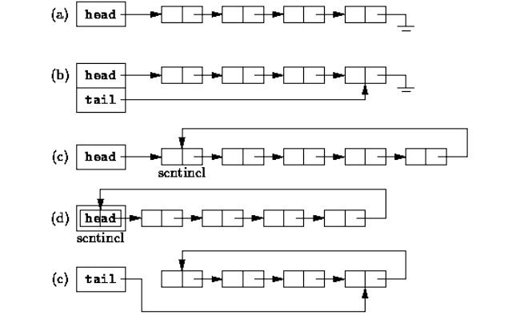

Listes chaînées, en objet
Requis
Tu dois savoir refaire les exercices sur la création et l'utilisation de classes en POO sans regarder le corrigé, et savoir ce qu'est l'héritage.
Rappel d'ouverture (5 minutes, de mémoire, cahier fermé)
- En Python,
a = [1, 42, 312]etb = [1, 42, 312]. Que vauta is b? Que vauta == b? Écris pourquoi, une raison pour chacun. - On écrit maintenant
b = a, puisb.append(3). Que vauta? - Quel est le coût de
pop(0)sur une liste Python, et pourquoi ?
Correction
-
a is bvautFalse, eta == bvautTrue.isdemande « est-ce le même objet », et la réponse est non : chaque[...]fabrique une liste neuve, il y en a donc deux.==demande « ont-ils la même valeur », et la réponse est oui, case par case.Même contenu, deux objets : c'est tout l'écart entre les deux questions.
-
avaut[1, 42, 312, 3].b = ane copie rien, les deux noms désignent le même objet, et cette foisa is bvautTrue. O(n), parce que retirer la première case oblige à décaler toutes les autres d'un cran.
Ces trois réponses sont exactement ce dont ce chapitre a besoin. Garde-les sous la main.
Ce qu'on fabrique
Tu as déjà implémenté une liste deux fois, en Gleam où elle était Vide ou Cons(tête, queue), puis en Python avec le même découpage. C'est la troisième, et le changement est complet : une liste devient une chaîne d'objets, chacun gardant une référence vers le suivant.
| Gleam | Python fonctionnel | Ici |
|---|---|---|
Vide |
tuple[()] |
une chaîne qui ne contient aucun maillon |
Cons(tête, queue) |
tuple[T, Liste[T]] |
un maillon, une donnée et une flèche vers le suivant |
Ce chapitre ne cherche pas à te faire apprendre Java. Ce que tu connais en Python est suffisant pour que tu ne sois pas perdu. Il cherche deux choses : voir comment une collection est faite de l'intérieur, et savoir ce que chaque opération coûte. C'est pour cela qu'on écrit tout à la main.
À la fin, tu auras écrit deux fichiers, et eux seuls :
Liste.java, qui contient les deux classesMaillonetListeListeTest.java, qui contient les tests, donnés au fur et à mesure.
Place-les côte à côte dans un répertoire java/listes/ de ton dépôt.
L'atelier Java, à faire une fois avant de commencer
Java s'installe avec nsi install openjdk, plus deux extensions VSCode, et rien de ce chapitre ne se lance en ligne de commande. Tout est sur la page Java, l'atelier, à faire une fois pour toutes avant d'aller plus loin.
Deux choses à y lire pour comprendre cette page-ci : le tableau des correspondances entre Python et Java, une dizaine de lignes, et la façon de lancer les tests.
Pourquoi Java : tout y est déclaré avec son type, et == y compare toujours des références. Ce que Python laisse implicite, Java l'écrit, ce qui est utile précisément sur un chapitre dont l'objet d'étude est la flèche entre deux objets.
== ne compare pas ce que tu crois
En Java, == et != comparent toujours des références : c'est le is de Python, jamais le == de Python. Pour comparer deux données, il faut écrire a.equals(b).
L'essentiel de ce chapitre consiste à comparer des références, donc == sera presque toujours le bon choix. L'exception arrive plus bas, et elle est signalée.
Le maillon
Un maillon porte une donnée et une flèche vers le maillon suivant. Le dernier ne pointe vers rien, null.
graph LR
m1["2"] --> m2["3"] --> m3["4"] --> N["null"]Voici la classe. Copie-la dans Liste.java, c'est le point de départ.
class Maillon<T> {
/** La donnée portée par ce maillon. */
T data;
/** La référence vers le maillon suivant. */
Maillon<T> suivant;
Maillon(T data, Maillon<T> suivant) {
this.data = data;
this.suivant = suivant;
}
}
Construire une chaîne à la main
On construit la chaîne 2 -> 3 -> 4 -> null dessinée plus haut. Voici la première instruction, celle qui crée le maillon portant 4 :
Écris les deux lignes qui manquent, de sorte que m1 désigne à la fin le maillon qui porte 2.
Écris-les avant de dérouler la correction.
Correction
Maillon<Integer> m3 = new Maillon<>(4, null);
Maillon<Integer> m2 = new Maillon<>(3, m3);
Maillon<Integer> m1 = new Maillon<>(2, m2);
L'ordre est imposé, et c'est pour cela que la première instruction était celle du bout : pour construire un maillon, il faut déjà tenir son suivant. C'est exactement le Cons(2, Cons(3, Cons(4, Vide))) de Gleam, écrit de l'intérieur vers l'extérieur.
Quatre opérations, et leur contrat
Construire une chaîne à la main est vite pénible. On donne donc au maillon quatre opérations, qui ne font que rebrancher des flèches : aucune ne crée ni ne détruit de maillon.
Dans le tableau, ce maillon désigne celui sur lequel on appelle la méthode, et les noms d'arguments sont ceux des signatures que tu écriras.
| Opération | Ce qu'elle fait | Précondition | Coût |
|---|---|---|---|
insereApres(m) |
insère le maillon m entre ce maillon et son suivant |
aucune | O(1) |
decrocheProchain() |
décroche de la chaîne le maillon qui suit ce maillon, et le renvoie. La chaîne se referme derrière lui, et il emporte sa flèche | il y a un maillon après ce maillon | O(1) |
avancer(k) |
renvoie le maillon situé k crans plus loin, avancer(0) renvoie ce maillon |
k positif ou nul, sinon IllegalArgumentException |
O(k) |
deplacerProchainApres(dest) |
décroche le maillon qui suit ce maillon, le réinsère juste après dest, et le renvoie |
il y a un maillon après ce maillon, et dest n'est pas lui |
O(1) |
Suivre les flèches, sur papier
On part de la chaîne 1 -> 2 -> 3 -> 4 -> null, dont les maillons s'appellent a, b, c, d.
Dessine la chaîne après chacune des trois étapes ci-dessous, dans l'ordre. Pour chaque étape, écris :
- la chaîne obtenue, sous la forme
1 -> ... -> null - la donnée du maillon renvoyé, quand la méthode en renvoie un
- vers quoi pointe ce maillon renvoyé.
Maillon<Integer> neuf = new Maillon<>(9, null);
a.insereApres(neuf); // étape 1
a.decrocheProchain(); // étape 2
a.deplacerProchainApres(c); // étape 3
Tu n'as que le tableau de contrats ci-dessus, et il suffit : ces trois lignes se déroulent sans avoir écrit une ligne de code.
Dessine les trois étapes avant de dérouler la correction.
Correction
Étape 1. 1 -> 9 -> 2 -> 3 -> 4 -> null. Rien n'est renvoyé.
Étape 2. 1 -> 2 -> 3 -> 4 -> null, la chaîne s'est refermée derrière le maillon décroché. Celui-ci porte 9, c'est lui qui est renvoyé, et il emporte sa flèche : il pointe toujours vers le maillon 2.
Étape 3. 1 -> 3 -> 2 -> 4 -> null. Le maillon renvoyé porte 2. C'est le même objet qu'avant, déplacé, aucun maillon n'a été créé.
L'étape 3 est la composition des deux premières : décrocher, puis insérer ailleurs.
À écrire : les quatre opérations
Chaque méthode se place dans la classe Maillon.
Pas de tests pour l'instant : ils construisent tous une liste, et la classe Liste n'existe pas encore. Ta vérification, c'est le dessin de l'exercice précédent, à refaire sur ton code ligne à ligne. Tu retrouveras les quatre opérations testées un peu plus loin, et elles passeront d'un coup.
insereApres
Deux affectations, et l'ordre compte : m doit d'abord apprendre où va la suite de la chaîne, et ce maillon ne peut le pointer qu'ensuite. Dans l'autre ordre, plus rien ne désigne le maillon qui suivait.
decrocheProchain
Il faut garder une référence vers le maillon décroché avant de le sortir de la chaîne, sinon plus rien ne le désigne et tu ne peux plus le renvoyer.
avancer
Commence par refuser un k négatif :
Puis une boucle for qui fait k pas. La référence qui se déplace part de this.
deplacerProchainApres
Trois lignes, et aucune n'est nouvelle : c'est l'étape 3 de ton dessin, écrite en Java. Tu n'écris ni new, ni affectation de suivant.
Une liste est un maillon, et c'est le sien
Avec les seuls maillons, chaque opération traîne deux cas particuliers : « et si la chaîne est vide ? » et « et si c'est le premier maillon ? ». Ils reviennent partout.
On les supprime tous les deux d'un coup, avec une idée qui demande un instant d'adaptation : placer avant le premier maillon un maillon qui est toujours là, qui ne porte aucune donnée, et qui sert de point de départ. On l'appelle une sentinelle.

Le schéma (d) est celui qu'on construit : la liste est elle-même la sentinelle. Elle hérite donc de Maillon, et le dernier maillon pointe de nouveau sur elle. La chaîne est circulaire, et plus aucun suivant ne vaut null.
Pour aller plus loin : c'est le choix du noyau Linux
Le schéma (d) n'est pas une curiosité de cours. C'est celui des listes chaînées du noyau Linux, dans include/linux/list.h. Une liste y est une struct list_head, et une liste vide pointe sur elle-même :
Le test de vacuité y est notre estVide(), ligne pour ligne, et le parcours s'y arrête en retombant sur la tête, comme notre ptr != this :
static inline int list_empty(const struct list_head *head)
{
return READ_ONCE(head->next) == head;
}
Ce que ce choix achète. Aucun suivant ne vaut jamais null, donc aucune opération n'a à se demander si elle est au bout de la chaîne, ni si la liste est vide. C'est le piège que Tony Hoare appelle son erreur à un milliard de dollars : il a introduit la référence nulle en 1965 dans ALGOL W parce qu'elle était facile à implémenter, et il en a fait une conférence en 2009 sous le titre Null References: The Billion Dollar Mistake. La sentinelle ne fait pas disparaître null du langage, et une donnée peut toujours en être un. Elle le retire de l'endroit où il coûtait le plus cher, la fin de la chaîne, qu'il fallait tester dans chaque méthode.
Deux différences, pour ne pas croire que c'est le même objet. Le noyau est doublement chaîné, chaque maillon ayant un next et un prev : il insère en fin et retire un maillon en O(1), là où il nous faut precedent en O(n). Et il est intrusif, il n'y a pas de champ data : le maillon est embarqué dans la donnée, et on remonte de l'un à l'autre avec container_of.
Une liste vide pointe sur elle-même :
graph LR
L["Liste"] --> LDessiner la liste à deux éléments
Dessine la liste qui contient 1 puis 2, avec la sentinelle. Combien de flèches as-tu tracées, et où arrive la dernière ?
Dessine avant de dérouler la correction.
Correction
graph LR
L["Liste"] --> m1["1"] --> m2["2"] --> LTrois flèches pour deux éléments : une par maillon, plus celle de la sentinelle. La dernière revient sur la liste.
Un parcours ne s'arrête donc plus quand il rencontre null, mais quand il retombe sur la liste : la condition de boucle devient ptr != this.
Comme Liste hérite de Maillon, son constructeur appelle super(). Il faut donc donner à Maillon un constructeur sans argument. Ajoute-le dans la classe Maillon, sous l'autre :
/**
* Crée un maillon sans donnée ni suivant (les deux valent {@code null}).
* Sert à construire une sentinelle.
*/
Maillon() {}
Puis, sous la classe Maillon dans le même fichier :
class Liste<T> extends Maillon<T> {
/** Crée une liste vide. */
Liste() {
super();
// une liste est sa propre sentinelle : vide, elle pointe sur elle-même
this.suivant = this;
}
/** Indique si la liste est vide. */
boolean estVide() {
return this.suivant == this;
}
}
Les quatre opérations de tricotage n'ont pas bougé d'une ligne
Relis-les : aucune ne parle de null, aucune ne parle de la fin de la chaîne. Elles ne font que rebrancher des flèches, donc elles fonctionnent telles quelles sur une chaîne circulaire. C'est la raison pour laquelle on les a écrites en premier.
Le fichier de tests
Crée ListeTest.java à côté de Liste.java, et mets-y ceci :
import static org.junit.jupiter.api.Assertions.*;
import java.time.Duration;
import java.util.ArrayList;
import java.util.Comparator;
import java.util.List;
import java.util.NoSuchElementException;
import org.junit.jupiter.api.DisplayName;
import org.junit.jupiter.api.Test;
public class ListeTest {
/** Construit une liste contenant les éléments donnés, dans l'ordre. */
static Liste<Integer> L(Integer... xs) {
Liste<Integer> l = new Liste<>();
for (Integer x : xs) {
l.append(x);
}
return l;
}
/** Renvoie les éléments de la liste, dans l'ordre, pour les comparer facilement. */
static <T> List<T> contenu(Liste<T> l) {
List<T> res = new ArrayList<>();
Maillon<T> ptr = l.suivant;
while (ptr != l) {
res.add(ptr.data);
ptr = ptr.suivant;
}
return res;
}
/** Renvoie les maillons de la liste (les objets eux-mêmes), dans l'ordre. */
static <T> List<Maillon<T>> maillons(Liste<T> l) {
List<Maillon<T>> res = new ArrayList<>();
Maillon<T> ptr = l.suivant;
while (ptr != l) {
res.add(ptr);
ptr = ptr.suivant;
}
return res;
}
/** Un élève, pour tester la stabilité du tri : on trie par note uniquement. */
record Eleve(String nom, int note) {}
static final Comparator<Eleve> PAR_NOTE = Comparator.comparingInt(Eleve::note);
}
Chaque test que la suite te donne se colle à l'intérieur de la classe ListeTest, avant son accolade fermante. Les trois assertions qui reviennent partout, et la façon de lire un échec, sont sur la page Java, l'atelier.
Les quatre outils de l'en-tête serviront à tous les tests : L(1, 2, 3) construit une liste, contenu et maillons en rendent respectivement les éléments et les maillons, et Eleve servira tout à la fin, pour le tri.
Du rouge, le temps d'un exercice
L appelle append, que tu n'as pas encore écrite : VSCode souligne donc des lignes en rouge, et aucun test ne tourne. Cela se débloque au premier exercice de la section suivante, et tout passe au vert d'un coup.
Deux tests à ajouter, qui vérifient les deux constructeurs de Maillon :
@Test
@DisplayName("Maillon(data, suivant) stocke la donnée et le suivant")
void maillonConstructeur() {
Maillon<Integer> fin = new Maillon<>();
Maillon<Integer> m = new Maillon<>(5, fin);
assertEquals(5, m.data);
assertSame(fin, m.suivant);
}
@Test
@DisplayName("Maillon() crée un maillon sans donnée ni suivant")
void maillonVide() {
Maillon<Integer> m = new Maillon<>();
assertNull(m.data);
assertNull(m.suivant);
}
Prédire, sur une chaîne circulaire
Soit l une liste contenant 1, 2, 3. Donne, sans exécuter :
- ce que renvoie
l.avancer(0) - la donnée de
l.avancer(3) - ce que renvoie
l.avancer(4) - la donnée de
l.avancer(5).
Écris tes quatre réponses avant de dérouler la correction.
Correction
l.avancer(0)renvoielelle-même : la liste est un maillon, etavancer(0)ne bouge pas.l.avancer(3).datavaut3. La sentinelle est le départ, donc le premier élément est à un cran.l.avancer(4)renvoiel: on est revenu sur la sentinelle.l.avancer(5).datavaut1: on repart pour un tour.
Sur une chaîne circulaire, avancer ne tombe jamais en panne de maillon. Il tourne.
Les méthodes de la liste
Toutes ces méthodes se placent dans la classe Liste, sauf une, qui est signalée. Le parcours est toujours le même : une référence qui part de this.suivant et qui avance tant qu'elle n'est pas revenue sur this.
dernierMaillon et append
Les deux ensemble (obligatoire)
/**
* Renvoie le dernier maillon, celui qui revient sur la liste, en O(n).
* Renvoie la liste elle-même si elle est vide.
*/
Maillon<T> dernierMaillon() {
dernierMaillon cherche le maillon dont le suivant est this. Une liste vide n'en a pas, elle renvoie alors this, ce qui tombe juste si ta référence part de this.
append tient en une ligne et n'invente rien : trouver le dernier maillon, et insérer après lui.
@Test
@DisplayName("dernierMaillon renvoie le maillon qui revient sur la liste")
void dernierMaillon() {
Liste<Integer> l = L(1, 2, 3);
Maillon<Integer> d = l.dernierMaillon();
assertEquals(3, d.data);
assertSame(l, d.suivant);
}
@Test
@DisplayName("dernierMaillon d'une liste vide est la liste elle-même")
void dernierMaillonVide() {
Liste<Integer> l = L();
assertSame(l, l.dernierMaillon());
}
Les quatre opérations de tricotage, enfin testées
append existe, donc L fonctionne, donc tous les tests peuvent construire une liste. Colle les sept qui suivent : ils vérifient les quatre méthodes de Maillon que tu as écrites avant d'avoir une liste. Ils doivent passer sans que tu touches à ton code.
@Test
@DisplayName("insereApres branche un maillon juste après")
void insereApres() {
Liste<Integer> l = L(1, 3);
Maillon<Integer> m = new Maillon<>(2, null);
l.suivant.insereApres(m);
assertEquals(List.of(1, 2, 3), contenu(l));
assertSame(m, l.suivant.suivant);
}
@Test
@DisplayName("decrocheProchain retire le maillon suivant et le renvoie")
void decrocheProchain() {
Liste<Integer> l = L(1, 2, 3);
Maillon<Integer> deux = l.suivant.suivant;
Maillon<Integer> m = l.suivant.decrocheProchain();
assertSame(deux, m);
assertEquals(List.of(1, 3), contenu(l));
}
@Test
@DisplayName("decrocheProchain depuis la liste retire le premier élément")
void decrocheProchainTete() {
Liste<Integer> l = L(1, 2);
Maillon<Integer> m = l.decrocheProchain();
assertEquals(1, m.data);
assertEquals(List.of(2), contenu(l));
}
@Test
@DisplayName("avancer(k) renvoie le maillon k crans plus loin")
void avancer() {
Liste<Integer> l = L(1, 2, 3);
assertSame(l, l.avancer(0));
assertEquals(1, l.avancer(1).data);
assertEquals(3, l.avancer(3).data);
assertSame(l, l.avancer(4), "on revient sur la sentinelle");
}
@Test
@DisplayName("avancer avec k négatif lève une exception")
void avancerNegatif() {
assertThrows(IllegalArgumentException.class, () -> L(1).avancer(-1));
}
@Test
@DisplayName("deplacerProchainApres déplace le maillon suivant après dest")
void deplacerProchainApres() {
Liste<Integer> l = L(1, 2, 3, 4);
Maillon<Integer> deux = l.avancer(2);
Maillon<Integer> m = l.suivant.deplacerProchainApres(l.avancer(3));
assertSame(deux, m, "c'est le même maillon, pas une copie");
assertEquals(List.of(1, 3, 2, 4), contenu(l));
}
@Test
@DisplayName("deplacerProchainApres(liste) ramène un maillon en tête")
void deplacerProchainApresTete() {
Liste<Integer> l = L(1, 2, 3);
l.avancer(2).deplacerProchainApres(l);
assertEquals(List.of(3, 1, 2), contenu(l));
}
taille
Compter les éléments (obligatoire)
@Test
@DisplayName("Une liste neuve est vide")
void listeNeuveVide() {
Liste<Integer> l = L();
assertTrue(l.estVide());
assertEquals(0, l.taille());
assertSame(l, l.suivant, "la liste vide pointe sur elle-même");
}
@Test
@DisplayName("taille et estVide sur une liste non vide")
void tailleNonVide() {
assertEquals(3, L(1, 2, 3).taille());
assertFalse(L(1).estVide());
}
ajouterDebut
Ajouter en tête (obligatoire)
Une ligne. Le maillon neuf s'insère juste après la sentinelle, et c'est insereApres qui se charge de brancher sa flèche : tu peux donc le construire avec null comme suivant.
premier et dernier
Les deux bouts (obligatoire)
/**
* Renvoie le premier élément, en O(1).
* @throws NoSuchElementException si la liste est vide
*/
T premier() {
/**
* Renvoie le dernier élément, en O(n).
* @throws NoSuchElementException si la liste est vide
*/
T dernier() {
Les deux renvoient une donnée, pas un maillon. Sur une liste vide, ni l'un ni l'autre n'a de sens, c'est une précondition, et elle s'annonce par
@Test
@DisplayName("premier et dernier")
void premierDernier() {
assertEquals(7, L(7, 8, 9).premier());
assertEquals(9, L(7, 8, 9).dernier());
}
@Test
@DisplayName("premier et dernier sur une liste vide lèvent une exception")
void premierDernierVide() {
assertThrows(NoSuchElementException.class, () -> L().premier());
assertThrows(NoSuchElementException.class, () -> L().dernier());
}
get
L'élément d'indice donné (obligatoire)
/**
* Renvoie l'élément d'indice key, à partir de 0, en O(n).
* @throws IndexOutOfBoundsException si key est négatif ou trop grand
*/
T get(int key) {
@Test
@DisplayName("get renvoie l'élément d'indice donné")
void get() {
Liste<Integer> l = L(1, 2, 3);
assertEquals(1, l.get(0));
assertEquals(3, l.get(2));
}
@Test
@DisplayName("get hors limites lève une exception")
void getHorsLimites() {
Liste<Integer> l = L(1, 2, 3);
assertThrows(IndexOutOfBoundsException.class, () -> l.get(3));
assertThrows(IndexOutOfBoundsException.class, () -> l.get(-1));
}
Indice
Deux conditions d'arrêt, pas une : tu avances tant que tu n'es pas revenu sur la liste et que tu n'as pas atteint l'indice voulu. Après la boucle, c'est la raison de l'arrêt qui décide, et si tu es revenu sur la liste, l'indice était trop grand.
Tiens un compteur i qui est, à tout instant, l'indice du maillon courant. La condition devient lisible, et l'après-boucle aussi.
precedent
Le maillon d'avant (obligatoire)
/**
* Renvoie le maillon dont le suivant est m, en O(n).
* Le précédent du premier élément est la liste elle-même,
* et celui de la liste est son dernier maillon.
* @throws NoSuchElementException si m n'est pas dans la liste
*/
Maillon<T> precedent(Maillon<T> m) {
Cette méthode existe pour une raison précise : dans une chaîne à sens unique, on ne peut retirer un maillon qu'en passant par celui d'avant, avec precedent(m).decrocheProchain(). Le dernier test le montre.
@Test
@DisplayName("precedent renvoie le maillon qui précède")
void precedent() {
Liste<Integer> l = L(1, 2, 3);
assertEquals(2, l.precedent(l.avancer(3)).data);
assertSame(l, l.precedent(l.suivant), "le précédent du premier est la liste");
assertEquals(3, l.precedent(l).data, "le précédent de la liste est le dernier");
}
@Test
@DisplayName("precedent dans une liste vide")
void precedentVide() {
Liste<Integer> l = L();
assertSame(l, l.precedent(l));
}
@Test
@DisplayName("precedent d'un maillon absent lève une exception")
void precedentAbsent() {
Liste<Integer> l = L(1, 2);
assertThrows(NoSuchElementException.class, () -> l.precedent(new Maillon<>(9, null)));
}
@Test
@DisplayName("precedent permet de retirer un maillon")
void supprimerAvecPrecedent() {
Liste<Integer> l = L(1, 2, 3);
Maillon<Integer> deux = l.avancer(2);
l.precedent(deux).decrocheProchain();
assertEquals(List.of(1, 3), contenu(l));
}
Indice
On cherche la référence ref telle que ref.suivant == m. Tant que ce n'est pas le cas, on avance.
Si m n'est pas dans la liste, on finira par repasser par la sentinelle. C'est là, et seulement là, que l'exception se lève. Sans ce test, la boucle tourne indéfiniment.
estEgale
Comparer deux listes (obligatoire)
/** Indique si cette liste a les mêmes éléments que autre, dans le même ordre. */
boolean estEgale(Liste<T> autre) {
Deux références avancent en parallèle, une par liste. Attention à la condition de fin, deux listes de longueurs différentes ne doivent pas être déclarées égales.
@Test
@DisplayName("estEgale compare les éléments, dans l'ordre")
void egalite() {
assertTrue(L(1, 2).estEgale(L(1, 2)));
assertTrue(L().estEgale(L()));
assertFalse(L(1, 2).estEgale(L(1, 3)));
assertFalse(L(1, 2).estEgale(L(1)));
assertFalse(L(1).estEgale(L(1, 2)));
}
@Test
@DisplayName("estEgale compare les valeurs, pas les références")
void egaliteGrandsEntiers() {
// 1000 n'est pas dans le cache des Integer : deux objets distincts
assertTrue(L(1000).estEgale(L(1000)));
}
Indice
C'est ici que == n'est plus le bon outil. Comparer deux données demande ref1.data.equals(ref2.data).
Le second test explique pourquoi cela se voit si rarement : Java garde en cache les Integer de -128 à 127, donc 100 == 100 est vrai entre deux objets différents, alors que 1000 == 1000 est faux. Un code écrit avec == passe sur les petits nombres et échoue sur les grands.
clone
Copier la liste (obligatoire)
/**
* Crée une copie de la liste, en O(n).
* Les maillons sont neufs, les éléments eux-mêmes ne sont pas copiés.
*/
@Override
public Liste<T> clone() {
@Override et public sont imposés par la méthode dont celle-ci prend la place. Garde-les tels quels.
@Test
@DisplayName("clone crée une liste indépendante")
void clonage() {
Liste<Integer> l = L(1, 2, 3);
Liste<Integer> c = l.clone();
assertNotSame(l, c);
assertTrue(l.estEgale(c));
c.append(4);
assertEquals(List.of(1, 2, 3), contenu(l));
assertEquals(List.of(1, 2, 3, 4), contenu(c));
}
Indice
Deux références avancent en même temps : une qui lit la liste d'origine, une qui pointe sur le dernier maillon écrit dans la copie. À chaque tour, on insère un maillon neuf après la seconde, puis on avance les deux.
Construire la copie à coups de append marcherait aussi, mais coûterait O(n²). La raison est dans la section suivante.
greffer
Absorber une liste (obligatoire)
Cette méthode-ci se place dans la classe Maillon, pas dans Liste : on greffe après un maillon quelconque, pas forcément après la sentinelle. C'est la seule opération de maillon qui ait besoin de connaître une liste, et c'est pour cela qu'elle n'était pas dans le premier lot.
/**
* Insère tous les maillons de lst juste après ce maillon, en O(m).
* Les maillons sont déplacés, pas copiés : lst est vide après l'appel.
*/
void greffer(Liste<T> lst) {
@Test
@DisplayName("greffer insère les maillons d'une liste et la vide")
void greffer() {
Liste<Integer> l = L(1, 2);
Liste<Integer> g = L(8, 9);
Maillon<Integer> huit = g.suivant;
l.suivant.greffer(g);
assertEquals(List.of(1, 8, 9, 2), contenu(l));
assertTrue(g.estVide());
assertSame(huit, l.avancer(2), "les maillons sont déplacés, pas copiés");
}
@Test
@DisplayName("greffer en tête et en fin de liste")
void grefferTeteFin() {
Liste<Integer> l = L(1, 2);
l.greffer(L(8, 9));
assertEquals(List.of(8, 9, 1, 2), contenu(l));
Liste<Integer> n = L(1, 2);
n.dernierMaillon().greffer(L(8, 9));
assertEquals(List.of(1, 2, 8, 9), contenu(n));
assertEquals(9, n.dernier());
}
@Test
@DisplayName("greffer avec des listes vides")
void grefferVides() {
Liste<Integer> l = L(1);
l.greffer(L());
assertEquals(List.of(1), contenu(l));
Liste<Integer> v = L();
v.greffer(L(5));
assertEquals(List.of(5), contenu(v));
}
Indice
Commence par le cas où lst est vide : il n'y a rien à faire, et le traiter d'abord évite d'avoir à y penser ensuite.
Sinon, trois flèches changent, et aucune autre. Trouve le dernier maillon de lst, puis demande-toi, pour chacune de ces trois flèches, d'où elle part et où elle doit arriver : la fin de lst vers l'ancien suivant, ce maillon-ci vers le début de lst, et lst vers elle-même puisqu'elle est maintenant vide.
extend
Ajouter une copie (obligatoire)
/** Ajoute à la fin de cette liste une copie des maillons de lst, en O(n + m). */
void extend(Liste<T> lst) {
Une ligne, qui n'utilise que des méthodes déjà écrites. greffer vide la liste qu'elle absorbe, il ne faut donc pas lui donner lst.
@Test
@DisplayName("extend ajoute une copie des éléments et laisse l'autre liste intacte")
void extend() {
Liste<Integer> l = L(1, 2);
Liste<Integer> m = L(3, 4);
l.extend(m);
assertEquals(List.of(1, 2, 3, 4), contenu(l));
assertEquals(4, l.taille());
assertEquals(List.of(3, 4), contenu(m));
// Les maillons sont copiés : modifier m ne change pas l
m.append(5);
assertEquals(List.of(1, 2, 3, 4), contenu(l));
}
@Test
@DisplayName("extend clone lst : aucun maillon n'est partagé entre les deux listes")
void extendClone() {
Liste<Integer> l = L(1, 2);
Liste<Integer> m = L(3, 4);
Maillon<Integer> trois = m.avancer(1);
Maillon<Integer> quatre = m.avancer(2);
l.extend(m);
// avancer ne boucle jamais, même si les chaînes sont mal raccordées
assertNotSame(trois, l.avancer(3), "le maillon de 3 doit être une copie");
assertNotSame(quatre, l.avancer(4), "le maillon de 4 doit être une copie");
assertSame(l, l.avancer(5), "la fin de l doit revenir sur l");
assertSame(trois, m.avancer(1), "m garde ses propres maillons");
assertSame(quatre, m.avancer(2), "m garde ses propres maillons");
assertSame(m, m.avancer(3), "la fin de m doit revenir sur m");
}
@Test
@DisplayName("extend avec des listes vides")
void extendVide() {
Liste<Integer> l = L();
l.extend(L(3));
assertEquals(List.of(3), contenu(l));
assertEquals(3, l.dernier());
Liste<Integer> n = L(1);
n.extend(L());
assertEquals(List.of(1), contenu(n));
}
@Test
@DisplayName("extend d'une liste avec elle-même double ses éléments")
void extendElleMeme() {
Liste<Integer> l = L(1, 2);
l.extend(l);
assertEquals(List.of(1, 2, 1, 2), contenu(l));
}
Le dernier test mérite un instant. l.extend(l) rend bien [1, 2, 1, 2]. Demande-toi dans quel ordre les appels de ta ligne s'exécutent, et ce que ferait une version qui grefferait lst directement.
Renverser la liste
Lire, pas écrire
Ce test ne demande aucune méthode nouvelle. Il renverse une liste en place, sans créer un seul maillon, avec trois lignes qui n'utilisent que deplacerProchainApres.
Lis-le, et réponds à ces trois questions sur ton cahier avant de dérouler la correction :
- que désigne
premierau premier tour, et que désigne-t-il à la fin ? - à chaque tour, quel maillon bouge, et où va-t-il ?
- pourquoi la boucle s'arrête-t-elle quand
premier.suivantvautl?
@Test
@DisplayName("deplacerProchainApres permet de renverser une liste en place")
void renverserAvecDeplacer() {
for (int n = 0; n <= 4; n++) {
Liste<Integer> l = new Liste<>();
List<Integer> attendu = new ArrayList<>();
for (int i = 1; i <= n; i++) {
l.append(i);
attendu.add(0, i);
}
Maillon<Integer> premier = l.suivant;
while (premier != l && premier.suivant != l) {
premier.deplacerProchainApres(l);
}
assertEquals(attendu, contenu(l), "n = " + n);
}
}
Correction
premier désigne le maillon qui portait le premier élément, et il n'est jamais réaffecté : tout le reste défile devant lui, et il finit dernier.
À chaque tour, le maillon qui suit premier est décroché et réinséré juste après l, c'est-à-dire en tête. Sur 1, 2, 3, 4 :
La boucle s'arrête quand premier.suivant vaut l, parce que cela veut dire que premier est devenu le dernier maillon : tout ce qui le suivait est passé devant.
Le test boucle de n = 0 à 4 parce que c'est sur les listes de zéro et un élément que la condition d'arrêt est la plus facile à écrire de travers. premier != l est ce qui protège la liste vide.
Ce que cela coûte
Voici le coût de tout ce que tu viens d'écrire. n est la taille de la liste, m celle de la liste passée en argument.
| Coût | Opérations |
|---|---|
O(1) |
insereApres, decrocheProchain, deplacerProchainApres, estVide, premier, ajouterDebut |
O(k) |
avancer(k) |
O(n) |
taille, dernierMaillon, dernier, append, get, precedent, estEgale, clone |
O(m) |
greffer |
O(n + m) |
extend |
Combien de pas pour construire une liste ? (obligatoire)
On part d'une liste vide et on appelle append n fois de suite.
- Combien de maillons
dernierMaillonparcourt-il au quatrième appel ? - Donne le nombre total de maillons parcourus pour les
nappels, en fonction den. - Quel est le coût de la construction entière :
O(n),O(n log n)ouO(n²)?
Écris tes trois réponses avant de dérouler la correction.
Correction
- Trois. Au quatrième appel, la liste contient déjà trois éléments.
- \(0 + 1 + 2 + \dots + (n-1) = \dfrac{n(n-1)}{2}\). Pour
n = 100, cela fait 4950 pas. O(n²). Chaqueappendest enO(n), et on en faitn.
C'est pour cette raison que clone ne construit pas sa copie à coups de append : elle garde une référence sur le dernier maillon écrit et insère directement après lui. Chaque insertion coûte alors O(1), et le total retombe à O(n).
Une liste qui saurait faire append en O(1)
Regarde de nouveau le schéma plus haut. La variante (b) garde une seconde référence, tail, sur le dernier maillon. append devient alors O(1), sans aucun parcours.
Ce n'est pas gratuit. Cette référence doit être mise à jour par toutes les autres opérations : chaque insertion, chaque suppression, chaque greffe doit se demander si elle vient de changer le dernier maillon. Le coût quitte le calcul et arrive dans la maintenance du code.
C'est un arbitrage, pas une amélioration : on gagne sur une opération, on paie sur toutes les autres.
Choisir la structure (obligatoire)
Pour chacune des quatre situations, dis si tu prends une liste chaînée comme celle de ce chapitre, ou un tableau (une liste Python, un tableau Java). Justifie par le coût : quelle est l'opération la plus fréquente, et que coûte-t-elle dans chaque structure ?
- Un flux d'événements qu'on accumule, chaque nouvel événement passant devant les précédents.
- Un jeu tire au hasard, des milliers de fois par seconde, l'élément numéro
id'une collection de 10 000 cases. - On parcourt une collection en tenant la référence du maillon courant, et on retire au passage les éléments qui ne conviennent pas.
- Une fois par jour, on additionne tous les nombres d'une collection, du premier au dernier.
Écris tes quatre réponses avant de dérouler la correction.
Correction
- Liste chaînée. L'opération fréquente est l'ajout en tête :
ajouterDebutest enO(1), alors qu'insérer en tête d'un tableau oblige à décaler toutes les cases, doncO(n). - Tableau. L'opération fréquente est l'accès par indice :
O(1)dans un tableau, qui calcule l'adresse, contreO(n)pourget, qui parcourt. - Liste chaînée. Une fois le maillon précédent en main,
decrocheProchainest enO(1), on rebranche une flèche. Dans un tableau, chaque suppression décale la suite, doncO(n). - Ni l'une ni l'autre sur ce critère. Un parcours complet coûte
O(n)des deux côtés. Le coût ne départage pas, la décision se prend donc ailleurs : sur ce que la collection doit faire le reste du temps.
Retiens la question, pas les réponses : quelle opération est la plus fréquente, et que coûte-t-elle dans chaque structure ? C'est elle qui se transporte d'une situation à la suivante.
Problème de fin : trier la liste
Quatre méthodes, à écrire dans l'ordre. Elles forment un tri fusion qui ne crée aucun maillon : tout se fait en déplaçant des flèches.
C'est ici que servent le record Eleve et le PAR_NOTE posés dans l'en-tête de ListeTest : ils serviront à vérifier que le tri est stable, c'est-à-dire qu'à note égale, deux élèves gardent leur ordre d'origine.
Un Comparator<T> est l'objet qui décide de l'ordre. cmp.compare(a, b) rend un nombre négatif si a passe avant b, nul s'ils sont équivalents, et positif sinon. Comparator.naturalOrder() donne l'ordre croissant habituel, Comparator.reverseOrder() l'inverse.
milieu
Trouver le milieu sans compter (obligatoire)
/**
* Renvoie le dernier maillon de la moitié gauche, en O(n).
* Renvoie la liste elle-même si elle est vide.
*/
Maillon<T> milieu() {
La méthode s'appelle le lièvre et la tortue : deux références partent du premier maillon, le lièvre avance de deux crans quand la tortue en avance d'un. Quand le lièvre arrive au bout, la tortue est au milieu, et on n'a parcouru la liste qu'une fois.
Pour n éléments, la moitié gauche en contient \(\dfrac{n+1}{2}\), arrondi vers le bas.
Remplis ce tableau à la main avant d'écrire la méthode. La liste contient 1, 2, ..., n, et on demande la donnée du maillon renvoyé.
n |
1 | 2 | 3 | 4 | 5 | 6 |
|---|---|---|---|---|---|---|
milieu().data |
Le tableau rempli
n |
1 | 2 | 3 | 4 | 5 | 6 |
|---|---|---|---|---|---|---|
milieu().data |
1 | 1 | 2 | 2 | 3 | 3 |
La moitié gauche est la plus grosse quand n est impair : pour n = 5, elle contient 1, 2, 3 et la droite 4, 5.
@Test
@DisplayName("milieu renvoie le dernier maillon de la moitié gauche")
void milieu() {
int[] attendus = {1, 1, 2, 2, 3, 3}; // pour n = 1 à 6
for (int n = 1; n <= 6; n++) {
Liste<Integer> l = new Liste<>();
for (int i = 1; i <= n; i++) {
l.append(i);
}
// Si le lièvre saute la sentinelle, milieu boucle à l'infini :
// on arrête le test au bout d'une seconde.
Maillon<Integer> m = assertTimeoutPreemptively(Duration.ofSeconds(1), l::milieu, "n = " + n);
assertEquals(attendus[n - 1], m.data, "n = " + n);
}
}
@Test
@DisplayName("milieu d'une liste vide est la liste elle-même")
void milieuVide() {
Liste<Integer> l = L();
assertSame(l, l.milieu());
}
Indice
La chaîne est circulaire, donc rien n'arrête le lièvre tout seul. C'est la condition de la boucle qui doit l'arrêter, et elle porte sur deux choses à la fois, puisque le lièvre fait deux pas : lievre.suivant et lievre.suivant.suivant. Si l'une des deux est déjà la sentinelle, il faut s'arrêter.
Si tu n'en testes qu'une, le lièvre enjambe la sentinelle et repart pour un tour. Le test coupe au bout d'une seconde, mais le programme, lui, ne s'arrêterait jamais.
Avant d'ouvrir la solution
En une phrase, sur ton cahier : qu'est-ce que l'indice t'a appris sur ce qui n'allait pas dans ton code ?
couper
Couper la liste en deux (obligatoire)
/**
* Coupe la liste en deux, en O(n), sans copier de maillon.
* La moitié gauche part dans une nouvelle liste, qui est renvoyée ;
* cette liste garde la moitié droite.
*/
Liste<T> couper() {
@Test
@DisplayName("couper : la nouvelle liste prend la moitié gauche, this garde la droite")
void couper() {
Liste<Integer> l = L(1, 2, 3, 4, 5);
Liste<Integer> gauche = l.couper();
assertEquals(List.of(1, 2, 3), contenu(gauche));
assertEquals(List.of(4, 5), contenu(l));
}
@Test
@DisplayName("couper : gauche suivie de this redonne la liste, pour toutes les tailles")
void couperToutesTailles() {
for (int n = 0; n <= 6; n++) {
Liste<Integer> l = new Liste<>();
List<Integer> attendu = new ArrayList<>();
for (int i = 1; i <= n; i++) {
l.append(i);
attendu.add(i);
}
Liste<Integer> gauche = l.couper();
List<Integer> obtenu = new ArrayList<>(contenu(gauche));
obtenu.addAll(contenu(l));
assertEquals(attendu, obtenu, "n = " + n);
assertEquals((n + 1) / 2, gauche.taille(), "n = " + n);
}
}
@Test
@DisplayName("couper ne copie aucun maillon")
void couperSansCopie() {
Liste<Integer> l = L(1, 2, 3, 4);
List<Maillon<Integer>> avant = maillons(l);
Liste<Integer> gauche = l.couper();
assertSame(avant.get(0), gauche.suivant);
assertSame(avant.get(2), l.suivant);
}
Indice
Traite d'abord la liste vide : il n'y a rien à couper, on renvoie une liste vide.
Sinon, nomme les deux maillons de la frontière, le dernier de gauche que milieu te donne, et le premier de droite qui est son suivant. Il reste à faire pointer trois flèches au bon endroit pour que les deux chaînes circulaires soient refermées, chacune sur sa propre sentinelle.
Avant d'ouvrir la solution
En une phrase, sur ton cahier : qu'est-ce que l'indice t'a appris sur ce qui n'allait pas dans ton code ?
fusion
Fusionner deux listes triées (obligatoire)
/**
* Fusionne lst dans cette liste, en place, en O(n + m).
* Les deux listes doivent être triées selon cmp.
* Les maillons de lst sont absorbés : lst est vide après l'appel.
*/
void fusion(Liste<T> lst, Comparator<T> cmp) {
@Test
@DisplayName("fusion de deux listes triées donne une liste triée")
void fusion() {
Liste<Integer> l = L(1, 4, 6);
Liste<Integer> m = L(2, 3, 5, 7, 8);
l.fusion(m, Comparator.naturalOrder());
assertEquals(List.of(1, 2, 3, 4, 5, 6, 7, 8), contenu(l));
}
@Test
@DisplayName("fusion absorbe l'autre liste, qui devient vide")
void fusionAbsorbe() {
Liste<Integer> l = L(1, 3);
Liste<Integer> m = L(2, 4);
l.fusion(m, Comparator.naturalOrder());
assertTrue(m.estVide());
assertEquals(4, l.taille());
}
@Test
@DisplayName("fusion avec des listes vides")
void fusionVides() {
Liste<Integer> l = L();
l.fusion(L(1, 2), Comparator.naturalOrder());
assertEquals(List.of(1, 2), contenu(l));
Liste<Integer> n = L(1, 2);
n.fusion(L(), Comparator.naturalOrder());
assertEquals(List.of(1, 2), contenu(n));
Liste<Integer> v = L();
v.fusion(L(), Comparator.naturalOrder());
assertTrue(v.estVide());
}
@Test
@DisplayName("fusion quand toute l'autre liste est plus petite")
void fusionAutrePlusPetite() {
Liste<Integer> l = L(5, 6);
l.fusion(L(1, 2), Comparator.naturalOrder());
assertEquals(List.of(1, 2, 5, 6), contenu(l));
assertEquals(6, l.dernier());
}
@Test
@DisplayName("fusion : en cas d'égalité, les éléments de lst passent en premier")
void fusionEgalite() {
Eleve a = new Eleve("A", 10);
Eleve b = new Eleve("B", 10);
Liste<Eleve> l = new Liste<>();
l.append(b);
Liste<Eleve> lst = new Liste<>();
lst.append(a);
l.fusion(lst, PAR_NOTE);
assertEquals(List.of(a, b), contenu(l));
}
Indice
Garde deux références, une par liste, et fais-les pointer sur le maillon d'avant celui que tu compares. C'est ce qui te permet ensuite de décrocher, puisque dans une chaîne à sens unique on agit toujours depuis le précédent.
À chaque tour, compare les deux suivants. Si celui de cette liste passe en premier, il est déjà à sa place et tu avances. Sinon, tu déplaces celui de lst juste après ta référence.
Indice plus précis
La boucle s'arrête dès que l'une des deux listes est épuisée, et il reste alors deux cas. Si c'est lst qui est vide, tout est déjà en place. Si c'est cette liste, il reste à raccrocher la fin de lst.
Tu as déjà écrit la méthode qui fait exactement cela, et qui ne fait rien quand la liste est vide : elle traite donc les deux cas d'un coup, sans aucun if.
Dernier point, celui du test fusionEgalite : quand les deux éléments sont équivalents, c'est celui de lst qui doit passer en premier. Regarde bien quel côté de ton if reçoit l'égalité.
Avant d'ouvrir la solution
En une phrase, sur ton cahier : qu'est-ce que l'indice t'a appris sur ce qui n'allait pas dans ton code ?
Solution
Maillon<T> ref1 = this;
Maillon<T> ref2 = lst;
while (ref1.suivant != this && ref2.suivant != lst) {
if (cmp.compare(ref1.suivant.data, ref2.suivant.data) < 0) {
// On avance la flèche 1
ref1 = ref1.suivant;
} else {
// On déplace le maillon de lst après ref1,
// puis on observe le suivant depuis ce maillon
ref1 = ref2.deplacerProchainApres(ref1);
}
}
// greffer ne fait rien si lst est vide, et vide lst sinon
ref1.greffer(lst);
Le < strict est ce qui donne l'égalité à lst : à note égale, on passe dans le else, donc on déplace.
triFusion
Trier (obligatoire)
/**
* Trie la liste en place par tri fusion, en O(n log n).
* Le tri est stable, et aucun maillon n'est copié.
*/
void triFusion(Comparator<T> cmp) {
@Test
@DisplayName("triFusion trie la liste")
void triFusion() {
Liste<Integer> l = L(5, 2, 8, 1, 9, 3);
l.triFusion(Comparator.naturalOrder());
assertEquals(List.of(1, 2, 3, 5, 8, 9), contenu(l));
}
@Test
@DisplayName("triFusion sur des petites listes")
void triFusionPetites() {
Liste<Integer> vide = L();
vide.triFusion(Comparator.naturalOrder());
assertTrue(vide.estVide());
Liste<Integer> un = L(1);
un.triFusion(Comparator.naturalOrder());
assertEquals(List.of(1), contenu(un));
Liste<Integer> deux = L(2, 1);
deux.triFusion(Comparator.naturalOrder());
assertEquals(List.of(1, 2), contenu(deux));
}
@Test
@DisplayName("triFusion avec des doublons et une liste déjà triée")
void triFusionDoublons() {
Liste<Integer> l = L(4, 4, 1, 4);
l.triFusion(Comparator.naturalOrder());
assertEquals(List.of(1, 4, 4, 4), contenu(l));
Liste<Integer> triee = L(1, 2, 3, 4, 5);
triee.triFusion(Comparator.naturalOrder());
assertEquals(List.of(1, 2, 3, 4, 5), contenu(triee));
}
@Test
@DisplayName("triFusion suit l'ordre donné par le comparateur")
void triFusionDecroissant() {
Liste<Integer> l = L(3, 1, 2);
l.triFusion(Comparator.reverseOrder());
assertEquals(List.of(3, 2, 1), contenu(l));
}
@Test
@DisplayName("triFusion est stable : à note égale, l'ordre d'origine est conservé")
void triFusionStable() {
Eleve a = new Eleve("A", 2);
Eleve b = new Eleve("B", 1);
Eleve c = new Eleve("C", 2);
Eleve d = new Eleve("D", 1);
Liste<Eleve> l = new Liste<>();
for (Eleve e : List.of(a, b, c, d)) {
l.append(e);
}
l.triFusion(PAR_NOTE);
assertEquals(List.of(b, d, a, c), contenu(l));
}
@Test
@DisplayName("triFusion réutilise les maillons, sans en créer")
void triFusionSansCopie() {
Liste<Integer> l = L(3, 1, 2);
List<Maillon<Integer>> avant = maillons(l);
l.triFusion(Comparator.naturalOrder());
List<Maillon<Integer>> apres = maillons(l);
assertEquals(3, apres.size());
for (Maillon<Integer> m : apres) {
assertTrue(avant.contains(m), "maillon inconnu après le tri");
}
}
Indice
Cinq lignes, et tu as déjà tout écrit. Deux cas de base, qui s'arrêtent sans rien faire : la liste vide, et la liste à un seul élément. Puis couper, trier chaque moitié, fusionner.
La moitié gauche est la liste que couper renvoie, la droite est this. Les deux appels récursifs portent donc sur des listes strictement plus courtes, ce qui garantit l'arrêt.
Avant d'ouvrir la solution
En une phrase, sur ton cahier : qu'est-ce que l'indice t'a appris sur ce qui n'allait pas dans ton code ?
Solution
if (this.estVide() || this.suivant.suivant == this) {
return;
}
Liste<T> gauche = this.couper();
gauche.triFusion(cmp);
this.triFusion(cmp);
this.fusion(gauche, cmp);
this.suivant.suivant == this est le test « la liste n'a qu'un élément » : on part de la sentinelle, et deux crans plus loin on est revenu dessus.
L'ordre de la dernière ligne n'est pas libre. fusion donne l'égalité aux éléments de son argument, donc c'est gauche qui doit être l'argument pour que le tri reste stable. Le test triFusionStable échoue si on inverse.
Pour finir
Lance la suite complète. Tes deux fichiers tiennent maintenant une structure de données entière, ses tests, et un tri en O(n log n) qui n'a créé aucun maillon : il n'a fait que déplacer des flèches, du début à la fin.